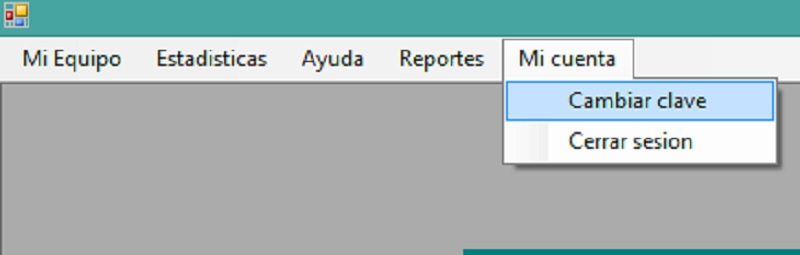

Al abrir la ventana principal del usuario (donde se muestran todas las ventanas), usted podrá observar la barra de menú en la parte superior de ésta:

Damos click en la pestaña "Mi Cuenta", a continuación click en la opción "Cambiar Clave":
Se le mostrará la ventana de "Cambio de Clave", aqui usted podrá visualizar el nombre de usuario, su estado, y un campo donde podrá intruducir una nueva contraseña, y, al presionar el botón guardar, su contraseña será cambiada y guardada en la base de datos.

Al presionar el botón "Ver Usuarios" tendrá acceso a la tabla que contendrá todo sus datos en orden

NOTA:
Note que la contraseña es distinta a la ingresada, esto es así por seguridad, puesto que la contraseña se encripta para que no pueda ser vista por otras personas